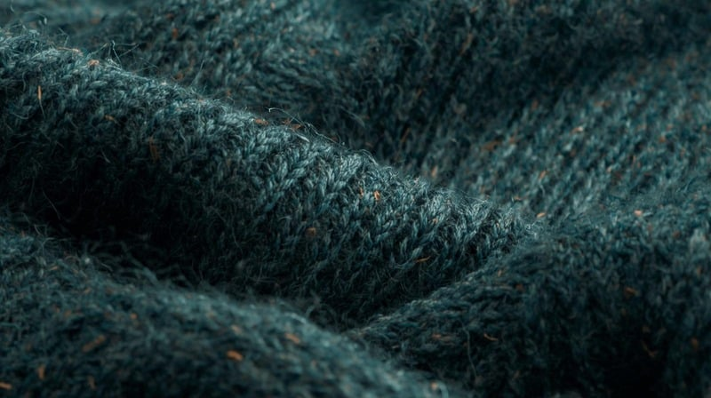

KakoBuy Hoodies: GSM, Embroidery QC & Fit Guide (2026)

The GSM Question
GSM (grams per square meter) is the single most important spec for KakoBuy hoodies. 350-450 GSM gives a solid midweight feel. Below 300 GSM will feel thin and cheap. Above 500 GSM is heavy and luxurious but expensive to ship. The listed GSM is not always accurate — request close-up material photos to assess thickness visually.
Embroidery QC: What to Look For
Request a macro close-up of embroidered logos. Check: thread density (should be tight, no gaps), color accuracy (compare against retail reference), alignment (centered, not tilted), and edge quality (clean outlines, no loose threads). A good embroidery QC photo is worth more than three mediocre ones.
Weight and Shipping Impact
Lightweight hoodies: 500-700g. Heavyweight: 900-1200g. At ¥150/kg shipping, that is ¥75-180 per hoodie just for shipping. Your spreadsheet weight estimates need to be accurate. Use the calculator.
| GSM Range | Feel | Best Season | Shipping Weight |
|---|---|---|---|
| 250-350 | Lightweight | Spring/Summer | 500-700g |
| 350-450 | Midweight | Fall/Spring | 700-1000g |
| 450-550 | Heavyweight | Winter | 1000-1300g |
Frequently Asked Questions
380-420 GSM is the sweet spot — substantial without being excessively heavy. Below 350 GSM for lightweight layering pieces. Above 450 GSM for winter-weight hoodies.
Request a close-up of the fabric surface under good lighting. Look for consistent weaving, no pilling, and density that matches the GSM claim. Compare against a reference photo of a known-quality hoodie.